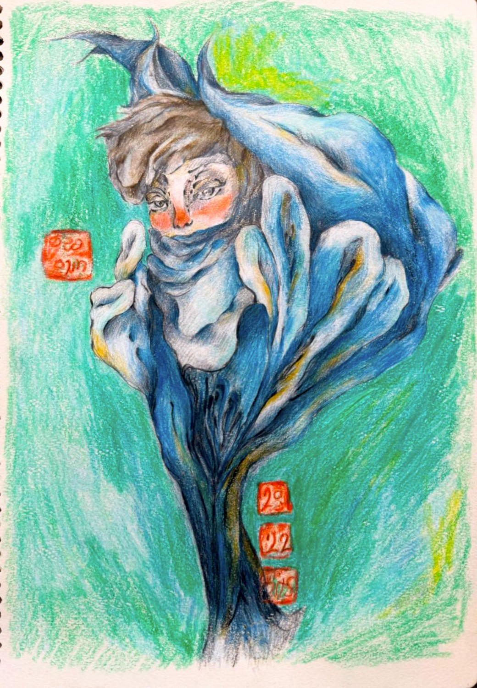
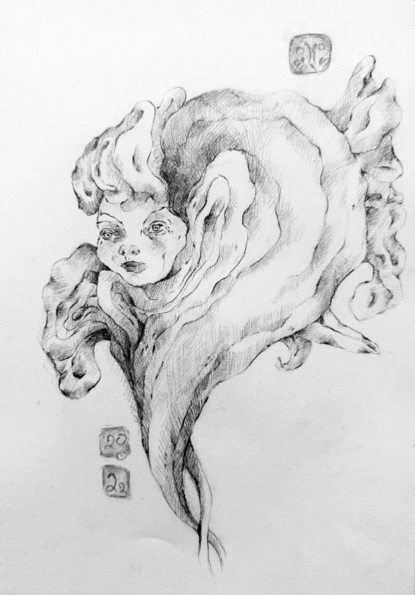
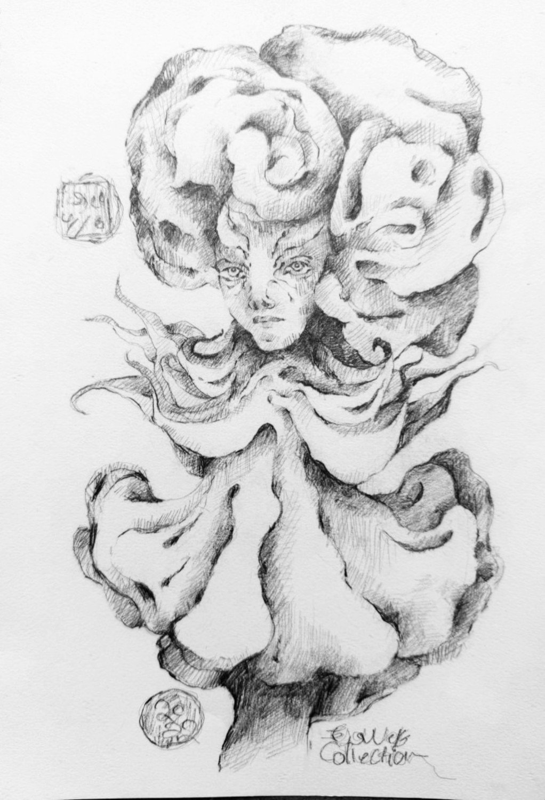
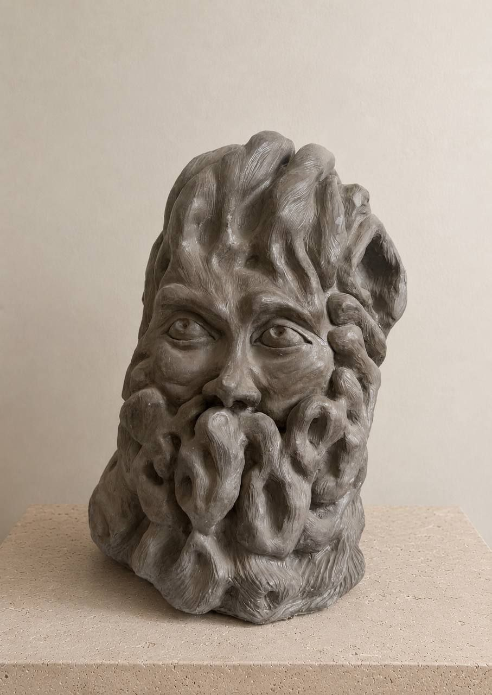
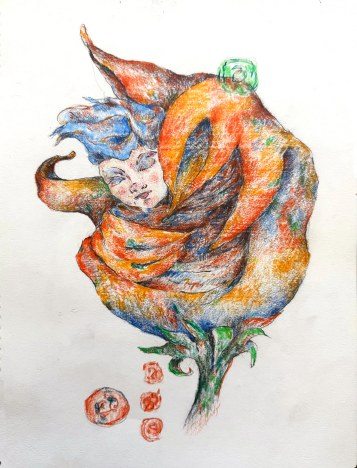

Flowers Series
Through hybrid portraits that merge human and floral forms, this series reflects on memory, presence, and the traces people leave behind. Each flower becomes a portrait of someone whose encounter, whether brief or enduring, has shaped my perception in some way. By displacing the familiar symbolism of flowers, these works transform them into vessels of memory, carrying individual presence beyond physical likeness.
Works
4 pieces + 1 sculpture



